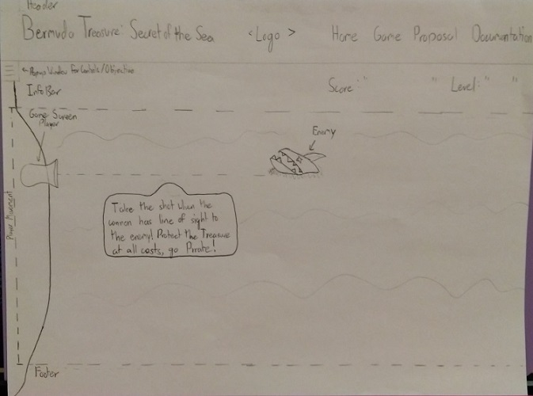
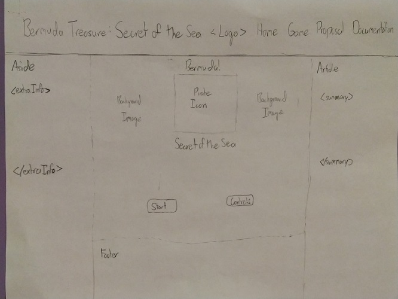

Bermuda Treasure: Secret of the Sea
I. High Concept
Help the Starfish Pirates escape from Bermuda with their bountiful load of treasure!
II. Genre
Gameplay Genre: Defense Survival Shooter
III. Platform
Desktop-Only
Mobile-Development: In Progress
Mobile-Development: In Progress
IV. Story
Located out in the squalling Caribbean waters of the 25th Latitude Starfish Pirates have discovered sunken treasure and upon loading it onto their ship dark omens started occurring. The sky turned dark, wind whipping at the soldiers faces, and all manner of sea creatures began circling the boat. Scared for their lives, but unwilling to give up the treasure, the soliders set sail towards the coast fleeing the attacking mob of sea creatures.
V. Esthetics
The graphics style for Bermuda Treasure: Secret of the Sea will be in a retro pixel art style reminiscent of StarTropics. Sound design will be mostly simple 8-bit looped sounds. The game will have sounds for shooting, destroying an enemy sea creature, and death sound.
VI. Gameplay
Mechanics
The user will be exposed to two linear paths, the one they can move along, and the path the enemies take towards the player. The player will have three tools at their disposal. The main cannon of the ship, a net launcher, and gunpowder barrels placed throughout each level. The player can only take so many hits from enemies before the ship will sink, and the health of the enemy is intially unknown to the player.
Controls
The game will use primarily keyboard and mouse to play. With the WASD keys to move, the mouse to shoot, and the Q/E keys for using the special abiliities.
Teaching the Game
The game will feature an intro tutorial level with popups containing text that teaches the player the basics on how to play.
Player Learning
The player needs to learn a few features crucial to their survival. First, the health of the player and enemies are not displayed, but after paying close attention the player will see how the ship sprite changes upon being damaged, and they'll notice how many cannon shots it takes to destroy enemies.
VII. Screenshots

